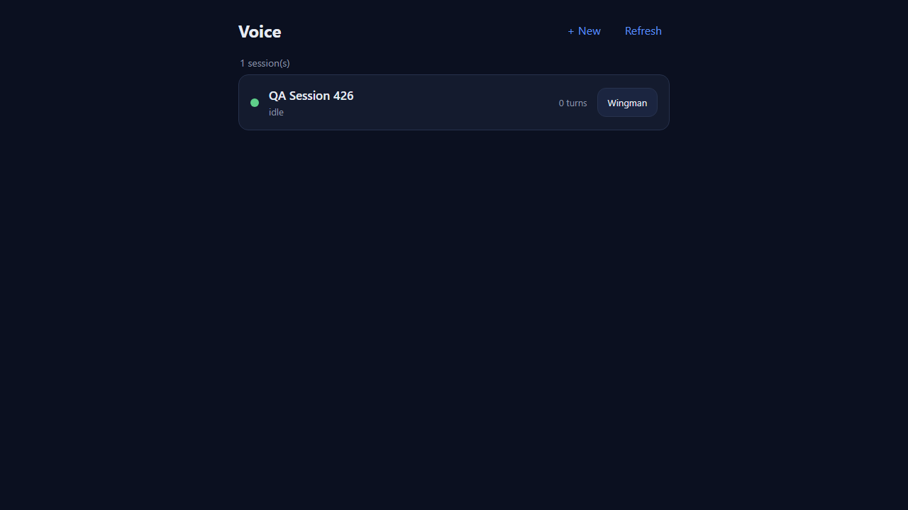
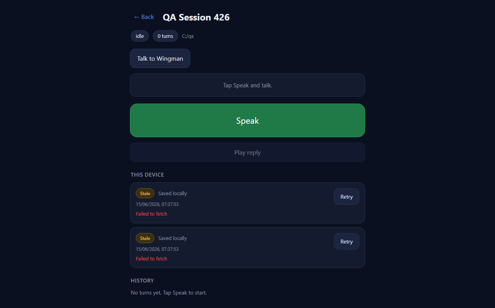
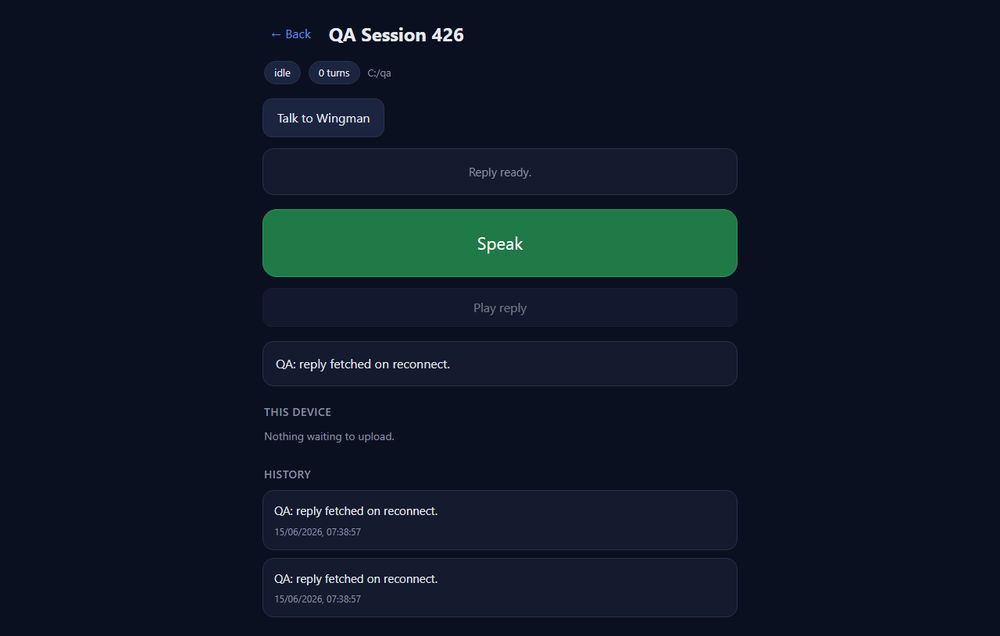

| # | Criterion | Expected | Actual (QA-observed) | Result |
|---|---|---|---|---|
| 1 | A Service Worker is registered and controlling /voice. |
navigator.serviceWorker.controller.scriptURL ends with /voice/sw.js;
registration scope is /voice and active. |
controller = http://127.0.0.1:7912/voice/sw.js; registration =
{scope: .../voice, active: true}. Also verified at the HTTP layer:
GET /voice/sw.js returns 200, Content-Type:
text/javascript, Service-Worker-Allowed: /. |
PASS |
| 2 | With queued turns, offline then online drains the queue automatically (no manual tap); pending replies are fetched. | On the online event the outbox drains to 0 rows with no Retry tap; both turns
complete the resumable upload and the reply is fetched. |
Outbox went 2 -> 0 rows automatically; both turns reached server complete
(turn-srv-1, turn-srv-2); reply box showed
"QA: reply fetched on reconnect."; empty-state "Nothing waiting to upload." shown. |
PASS |
| 3 | On a browser WITHOUT Background Sync, the online event + periodic probe still
drain the queue. |
With Background Sync removed, the queue still drains via the fallback path. | QA removed the sync accessor on
ServiceWorkerRegistration.prototype before any page script ran, so
reg.sync was false (verified in G1). The drain in criterion 2
then still occurred - proving it came from the online-event / periodic-probe fallback, not
Background Sync. While offline, the periodic probe kept retrying (upload attempts 0 -> 8). |
PASS |
| 4 | A turn pending past the 30-minute rule shows "Stale" and keeps retrying. | After the (shortened) threshold a "Stale" badge appears; the turn stays queued and keeps retrying. | With __VOICE_STALE_MS__=3000 both 60s-old turns re-badged "Stale"; rows stayed
queued (2 rows, not dropped) and upload attempts climbed 0 -> 8 over the offline window
(still retrying). |
PASS |



dotnet build CcDirector.Cockpit.csproj -> Build succeeded, 0 Warning(s), 0 Error(s)./voice, /pages/voice/voice.js, /pages/voice/db.js all still serve 200 (no adjacent breakage)./voice/sw.js serves a static wwwroot file with the standard Service-Worker-Allowed header; the page's bearer-token auth is unchanged. No CenCon DT security rule affected; no docs/cencon/ update required.flow:ready-qa.
cd src/CcDirector.Cockpit dotnet build CcDirector.Cockpit.csproj -c Debug dotnet run --no-build --no-launch-profile --urls http://127.0.0.1:7912 # then, from the repo root: python docs/cencon/proof/issue-426/qa/qa-proof-426.py docs/cencon/proof/issue-426/qa # -> "QA RESULT: PASS - all 4 acceptance criteria verified"